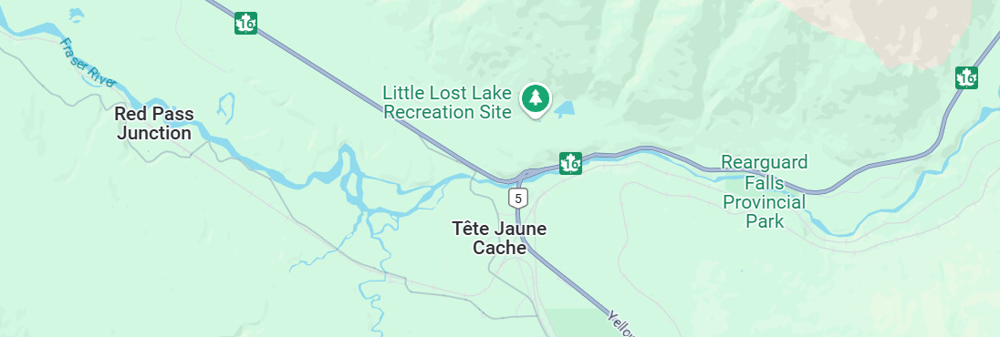
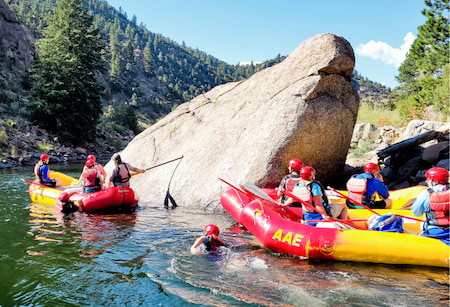
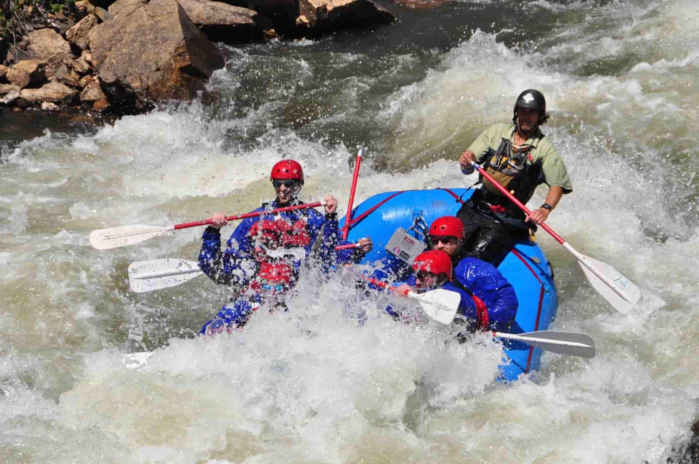
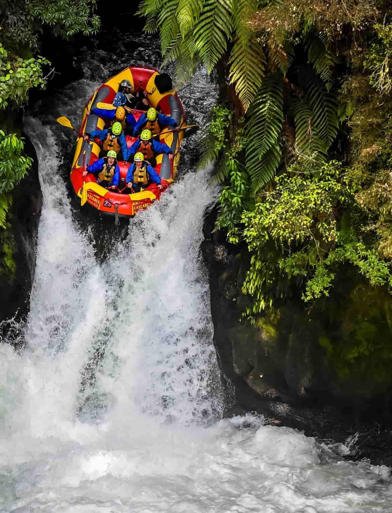
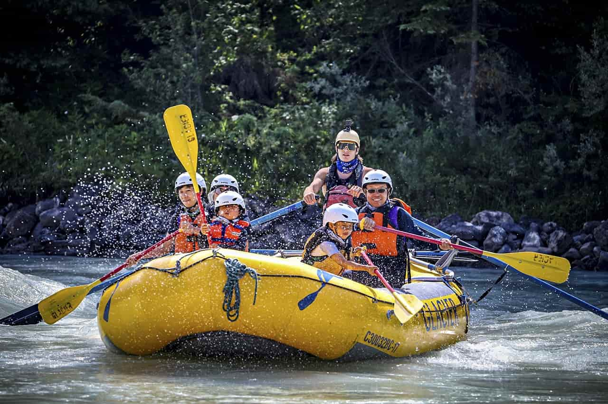

Our Trips
| Trip Name | Location | Difficulty | Minimun Age |
|---|---|---|---|
| Red Pass Junction Trip | Fraser River | Beginner | 13 years old |
| Merced Pass Trip | Fraser River | Intermediate | 16 years olds |
| Salmon Rapids Trip | Fraser River | Advanced | 21 years old |
| Tom Sawyer Pass Trip | Fraser River | For all the Family | 5 years old |
Trip Details

- great introduction to professionally guided rafting trips
- ideal trip for families with kids and any group wanting to enjoy a fun yet relaxing day on the river together
- Challenging but not overwhelming
- Situed for beginners, groups, return rafters, novice and experienced rafters

- characterized by a steep gradient and few obstacles to hinder a raft’s momentum
- Veteran rafters and adventurous novices alike enjoy long rapids and big rolling waves of this roller coaster like ride
- Has intimadting obstacles like Huge, tall waves
- Situed for Adventurous novice & veteran

- one of the best and most difficult spring whitewater rafting runs
- Experienced rafters eagerly travel to the northern corner of the state for this river’s outstanding whitewater and temperate rainforest scenery
- characterized by Commanding, tumultuous rapids, Sheer cliffs, numerous waterfalls
- Situed for veterna rafters

- perfect float trip for families with young children aged 5-7 years old
- his meandering section features gentle Class II rapids and calm, relaxing pools
- Lounge on the boats or swim in peaceful areas as you wind through the gold province of Alberta
- Situed for Families with children too young for the Beginner-Intermediate trip and with children 5-7 years old
All Our Trips Include
- Pro guide & Instruction
- Equipment
- Shuttles
- Fresh and delicious lunchs or meals
- Photoshoot Package